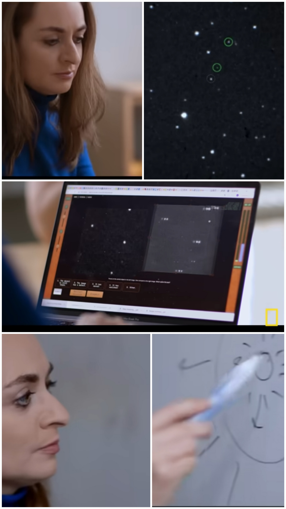

Om varför UFO/UAP inte kan avfärdas utan att först undersökas
Den här sidan handlar om varför påståendet ”det finns inga vetenskapliga bevis för UFO:n”
inte är så enkelt som det ofta låter.
På sidan finns en fullständig svensk översättning av Beatriz Villarroels artikel
publicerad i Liberation Times, i anslutning till dokumentären
The Age of Disclosure.
I artikeln förklarar Beatriz Villarroel varför det inte stämmer att det saknas vetenskapliga
observationer av UFO/UAP. Hon menar inte att man vet vad det är, utan att det finns
återkommande observationer som inte bara kan ignoreras.
Kort sagt: vi vet inte vad det är – men vi vet att det händer, och det räcker för att ta
frågan på allvar.
Svensk översättning
Originalartikel:
“We were told there is no scientific evidence for UFOs. Our research says otherwise”
Författare: Beatriz Villarroel · Publicerad i: Liberation Times
Svensk översättning: Anna Sundström.
Översättningen har utförts med målsättningen att exakt bevara innehåll, ton,
försiktighetsnivå och innebörd i originalartikeln av Beatriz Villarroel.
Inga tillägg, tolkningar eller omformuleringar som ändrar betydelsen har gjorts.

Beatriz Villarroel i arbete med observationer och analys inom Galileo-projektet.
Dokumentär 2024
National Geographic – dokumentärklipp med Beatriz Villarroel.
Dokumentären spelades in våren 2024, i samband med att Beatriz Villarroel reste genom USA för forsknings-
och projektarbete. I filmen medverkar hon tillsammans med flera framstående forskare i ett sammanhang som
präglas av nyfikenhet, metodisk noggrannhet och vetenskapligt ansvar.
Dokumentären, producerad av National Geographic, tar ett seriöst och balanserat grepp om UAP-fenomenet.
I stället för förenklingar eller spekulationer ligger fokus på vad som faktiskt observerats, hur data analyseras
och vilka frågor som fortfarande är öppna.
Beatriz presenterar sin forskning, de rapporter hon arbetat med och de slutsatser som kan dras utifrån
tillgängligt underlag. Resultatet är en film som inte försöker leverera färdiga svar – men som på ett
ovanligt tydligt sätt visar varför fenomenet förtjänar fortsatt vetenskaplig uppmärksamhet.
Även för den som är skeptisk erbjuder dokumentären nya perspektiv och viktiga frågor. Det är en välgjord film
som försöker förstå snarare än att förenkla – och som visar hur vetenskapligt arbete faktiskt ser ut i ett område
som länge varit omgivet av starka reaktioner.